About Me
Interests
- Visualization, Visual Analytics, Computer Graphics, GPGPU
Education
- King Abdullah University of Science and Technology,
Thuwal, KSA
(March 2010 — April 2013)
April 2013: Ph.D. in Computer Science, Visual Workflows for Oil and Gas Exploration. Advisor: Markus Hadwiger - Universität Koblenz-Landau,
Koblenz, Germany
(September 2002 — August 2008)
August 2008: Diplom Informatiker (M.Sc.) Computational Visualistics
Professional Experience
- Assitant Professor Computational Biology Center, Leids Universitair Medisch Centrum, The Netherlands, (Jan 2017 — today)
- Postdoctoral Fellow Computer Graphics and Visualization, Technische Universiteit Delft, The Netherlands, (May 2015 — today)
- Research Consultant for Visualization, Earth Fluid Modeling and Prediction Group, King Abdullah University of Science and Technology, Thuwal, KSA, (January 2014 — March 2015)
- Postdoctoral Fellow, GMSV (now VCC), King Abdullah University of Science and Technology, Thuwal, KSA, (May 2013 — December 2013)
- PhD Student, GMSV (now VCC), King Abdullah University of Science and Technology, Thuwal, KSA, (March 2010 — April 2013)
- Teaching Asstistant, for Scientific Visualization (CS 247) and GPU and GPGPU Programming (CS 380) courses in 2010, 2011 and 2013
- Researcher, Visualization Group, VRVis Research GmbH, Vienna, Austria, (February 2009 — February 2010)
- Research Assistant, CG Working Group, Universität Koblenz-Landau, Koblenz, Germany (September 2008 — January 2009)
- Several internships and research stays, e.g. SCI Institute - University of Utah, TU Vienna, SimVis GmbH, VRVis GmbH (see cv for full details).
Projects
- Cytosplore is a framework for the visual analysis of single cell data acquired through mass cytometry. It is the basis for my research in visual analytics I conduct in the Computer Graphics and Visualization group at TU Delft as part of the STW VanPIRe project. More details...
- OVis is a framework for the visual analysis of ocean forecasts. I started building OVis during my PhD research and continued working on it later on. It builds the foundation for several of my publications and I hope to to be able to make it available to the public soon. More details...
- Uberdice is an interactive arduino-based programmable die. It is a hobby project, together with Peter Rautek. We built a fully working prototype from scratch, starting with a 3D printed casing, to endless hours of soldering and finally programming complete games. More details...
Skills
- Programming: C, C++, Objective-C, GLSL, Cg, LaTeX, Javascript, HTML, CSS
- Technologies/API: Visual Studio, XCode, OpenGL, OpenCL, CUDA, Qt, D3.js, Cocoa, Ruby on Rails
- Languages: German - native, English - fluent
Publications
Peer Reviewed Journal & Conference Papers
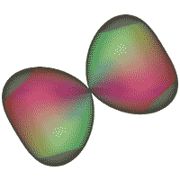
C. Zhang, M. Caan, T. Höllt, E.Eisemann, and A. Vilanova
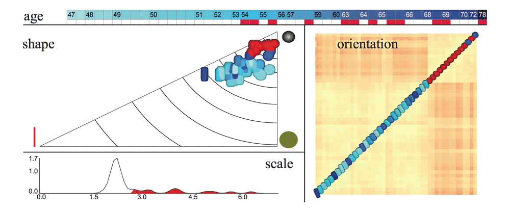
C. Zhang, M. Caan, T. Höllt, E.Eisemann, and A. Vilanova.
Overview + Detail Visualization for Ensembles of Diffusion Tensors.
Computer Graphics Forum (Proceedings of EuroVis),
36(3):
2017.
Overview + Detail Visualization for Ensembles of Diffusion Tensors
C. Zhang, M. Caan, T. Höllt, E.Eisemann, and A. Vilanova
Computer Graphics Forum (Proceedings of EuroVis)
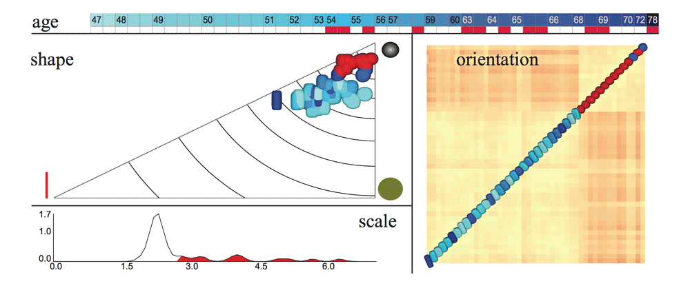
Abstract: A diffusion tensor imaging group study consists of a collection of volumetric diffusion tensor datasets (i.e., an ensemble) acquired from a group of subjects. The multivariate nature of the diffusion tensor imposes challenges on the analysis and the visualization. These challenges are commonly tackled by reducing the diffusion tensors to scalar-valued quantities that can be analyzed with common statistical tools. However, reducing tensors to scalars poses the risk of losing intrinsic information about the tensor. Visualization of tensor ensemble data without loss of information is still a largely unsolved problem. In this work, we propose an overview + detail visualization to facilitate the tensor ensemble exploration. We define an ensemble representative tensor and variations in terms of the three intrinsic tensor properties (i.e., scale, shape, and orientation) separately. The ensemble summary information is visually encoded into the newly designed aggregate tensor glyph which, in a spatial layout, functions as the overview. The aggregate tensor glyph guides the analyst to interesting areas that would need further detailed inspection. The detail views reveal the original information that is lost during aggregation. It helps the analyst to further understand the sources of variation and formulate hypotheses. To illustrate the applicability of our prototype, we compare with most relevant previous work through a user study and we present a case study on the analysis of a brain diffusion tensor dataset ensemble from healthy volunteers.
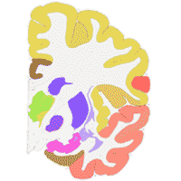
Sjoerd M.H. Huisman, Baldur van Lew, Ahmed Mahfouz, Nicola Pezzotti, Thomas Höllt, Lieke Michielsen, Anna Vilanova, Marcel J.T. Reinders, and Boudewijn P.F. Lelieveldt
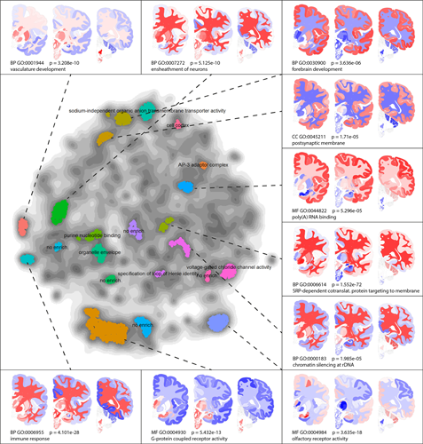
Sjoerd M.H. Huisman, Baldur van Lew, Ahmed Mahfouz, Nicola Pezzotti, Thomas Höllt, Lieke Michielsen, Anna Vilanova, Marcel J.T. Reinders, and Boudewijn P.F. Lelieveldt.
BrainScope: interactive visual exploration of the spatial and temporal human brain transcriptome.
Nucleic Acids Research,
gkx046:
pp. 1—11,
2017.
BrainScope: interactive visual exploration of the spatial and temporal human brain transcriptome
Sjoerd M.H. Huisman, Baldur van Lew, Ahmed Mahfouz, Nicola Pezzotti, Thomas Höllt, Lieke Michielsen, Anna Vilanova, Marcel J.T. Reinders, and Boudewijn P.F. Lelieveldt
Nucleic Acids Research
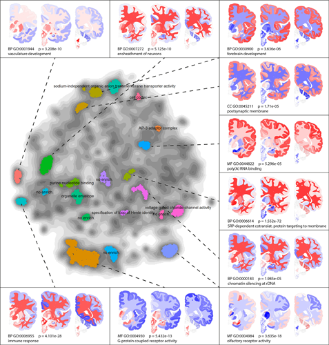
Abstract: Spatial and temporal brain transcriptomics has recently emerged as an invaluable data source for molecular neuroscience. The complexity of such data poses considerable challenges for analysis and visualization. We present BrainScope: a web portal for fast, interactive visual exploration of the Allen Atlases of the adult and developing human brain transcriptome. Through a novel methodology to explore high-dimensional data (dual t-SNE), BrainScope enables the linked, all-in-one visualization of genes and samples across the whole brain and genome, and across developmental stages. We show that densities in t-SNE scatter plots of the spatial samples coincide with anatomical regions, and that densities in t-SNE scatter plots of the genes represent gene co-expression modules that are significantly enriched for biological functions. We also show that the topography of the gene t-SNE maps reflect brain region-specific gene functions, enabling hypothesis and data driven research. We demonstrate the discovery potential of BrainScope through three examples: (i) analysis of cell type specific gene sets, (ii) analysis of a set of stable gene co-expression modules across the adult human donors and (iii) analysis of the evolution of co-expression of oligodendrocyte specific genes over developmental stages.
BrainScope is publicly accessible at www.brainscope.nl.
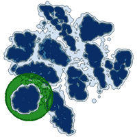
N. Pezzotti, B.P.F. Lelieveldt, L. van der Maaten, T. Höllt, E. Eisemann, and A. Vilanova
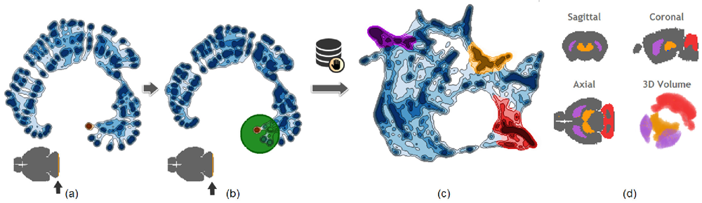
N. Pezzotti, B.P.F. Lelieveldt, L. van der Maaten, T. Höllt, E. Eisemann, and A. Vilanova.
Approximated and User Steerable tSNE for Progressive Visual Analytics.
IEEE Transactions on Visualization and Computer Graphics,
2016.
Approximated and User Steerable tSNE for Progressive Visual Analytics
N. Pezzotti, B.P.F. Lelieveldt, L. van der Maaten, T. Höllt, E. Eisemann, and A. Vilanova
IEEE Transactions on Visualization and Computer Graphics
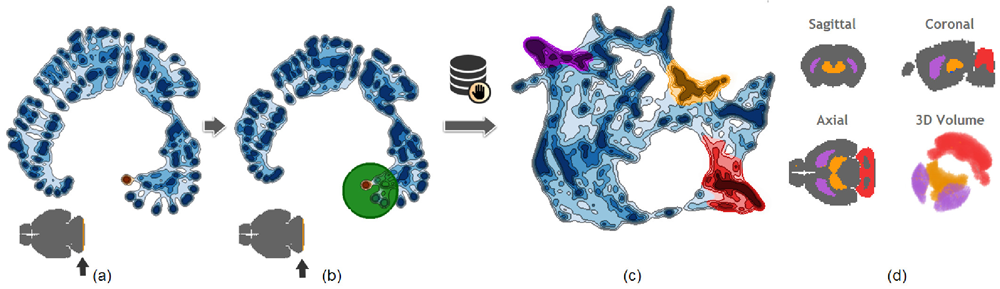
Abstract: Progressive Visual Analytics aims at improving the interactivity in existing analytics techniques by means of visualization as well as interaction with intermediate results. One key method for data analysis is dimensionality reduction, for example, to produce 2D embeddings that can be visualized and analyzed efficiently. t-Distributed Stochastic Neighbor Embedding (tSNE) is a well-suited technique for the visualization of several high-dimensional data. tSNE can create meaningful intermediate results but suffers from a slow initialization that constrains its application in Progressive Visual Analytics. We introduce a controllable tSNE approximation (A-tSNE), which trades off speed and accuracy, to enable interactive data exploration. We offer real-time visualization techniques, including a density-based solution and a Magic Lens to inspect the degree of approximation. With this feedback, the user can decide on local refinements and steer the approximation level during the analysis. We demonstrate our technique with several datasets, in a real-world research scenario and for the real-time analysis of high-dimensional streams to illustrate its effectiveness for interactive data analysis.
T. Höllt, N. Pezzotti, V. van Unen, F. Koning, E. Eisemann, B. Lelieveldt, and A. Vilanova.
Cytosplore: Interactive Immune Cell Phenotyping for Large Single-Cell Datasets.
Computer Graphics Forum (Proceedings of EuroVis),
35(3):
pp. 171—180,
2016.
Cytosplore: Interactive Immune Cell Phenotyping for Large Single-Cell Datasets
T. Höllt, N. Pezzotti, V. van Unen, F. Koning, E. Eisemann, B. Lelieveldt, and A. Vilanova
Computer Graphics Forum (Proceedings of EuroVis)
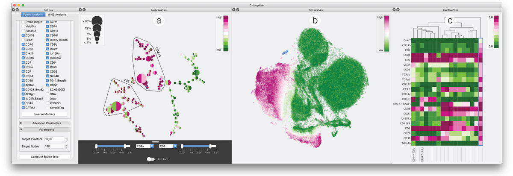
Abstract: To understand how the immune system works, one needs to have a clear picture of its cellular compositon and the cells’ corresponding properties and functionality. Mass cytometry is a novel technique to determine the properties of single-cells with unprecedented detail. This amount of detail allows for much finer differentiation but also comes at the cost of more complex analysis. In this work, we present Cytosplore, implementing an interactive workflow to analyze mass cytometry data in an integrated system, providing multiple linked views, showing different levels of detail and enabling the rapid definition of known and unknown cell types. Cytosplore handles millions of cells, each represented as a high-dimensional data point, facilitates hypothesis generation and confirmation, and provides a significant speed up of the current workflow. We show the effectiveness of Cytosplore in a case study evaluation.
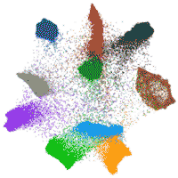
N. Pezzotti, T. Höllt, B. Lelieveldt, E. Eisemann, and A. Vilanova
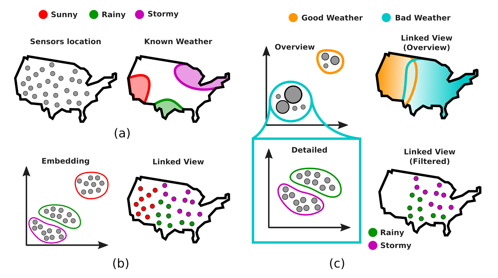
N. Pezzotti, T. Höllt, B. Lelieveldt, E. Eisemann, and A. Vilanova.
Hierarchical Stochastic Neighbor Embedding.
Computer Graphics Forum (Proceedings of EuroVis),
35(3):
pp. 21—30,
2016.
Hierarchical Stochastic Neighbor Embedding
N. Pezzotti, T. Höllt, B. Lelieveldt, E. Eisemann, and A. Vilanova
Computer Graphics Forum (Proceedings of EuroVis)
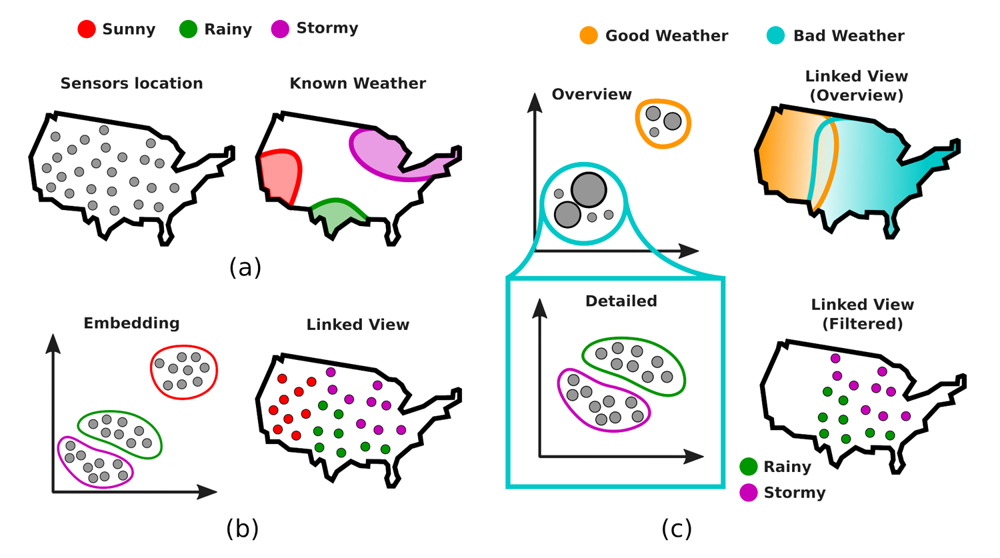
Abstract: In recent years, dimensionality-reduction techniques have been developed and are widely used for hypothesis generation in Exploratory Data Analysis. However, these techniques are confronted with overcoming the trade-off between computation time and the quality of the provided dimensionality reduction. In this work, we address this limitation, by introducing Hierarchical Stochastic Neighbor Embedding (Hierarchical-SNE). Using a hierarchical representation of the data, we incorporate the well-known mantra of Overview-First, Details-On-Demand in non-linear dimensionality reduction. First, the analysis shows an embedding, that reveals only the dominant structures in the data (Overview). Then, by selecting structures that are visible in the overview, the user can filter the data and drill down in the hierarchy. While the user descends into the hierarchy, detailed visualizations of the high-dimensional structures will lead to new insights. In this paper, we explain how Hierarchical-SNE scales to the analysis of big datasets. In addition, we show its application potential in the visualization of Deep-Learning architectures and the analysis of hyperspectral images.
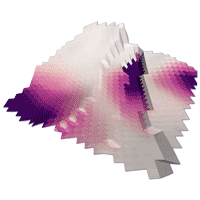
T. Höllt, F.M. de Matos Ravanelli, M. Hadwiger, and I. Hoteit
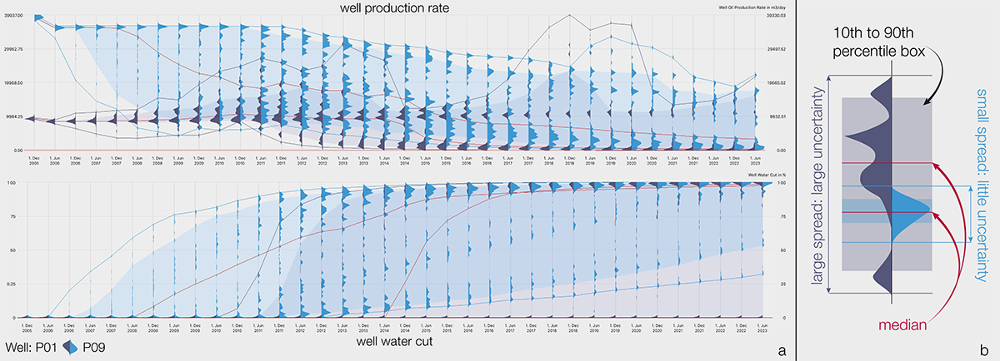
T. Höllt, F.M. de Matos Ravanelli, M. Hadwiger, and I. Hoteit.
Visual Analysis of Reservoir Simulation Ensembles.
In Proceedings of Workshop on Visualisation in Environmental Sciences (EnvirVis),
pp. 1—4,
2016.
Visual Analysis of Reservoir Simulation Ensembles
T. Höllt, F.M. de Matos Ravanelli, M. Hadwiger, and I. Hoteit
Proceedings of Workshop on Visualisation in Environmental Sciences (EnvirVis)
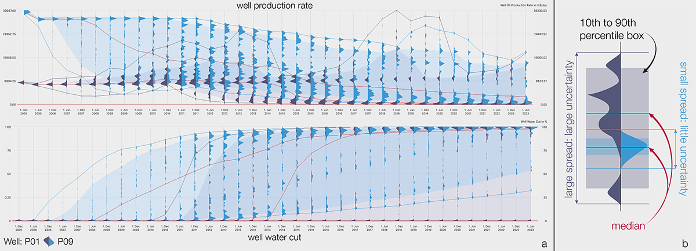
Abstract: Hydrocarbon reservoir simulation models produce large amounts of heterogeneous data, combining multiple variables of different dimensionality, such as two or three-dimensional geospatial estimates with abstract estimates simulated for the complete field or different wells. In addition these simulations are nowadays often run as so-called ensemble simulations, to capture uncertainty of the model, as well as boundary conditions as variation in the output. The (visual) analysis of such data is a challenging process, due to the size and complexity of the data. In this paper we present an integrated system for the visual analysis of ensemble reservoir simulation data. We provide tools to inspect forecasts for multiple variables of complete fields, as well as different wells. Finally, we present a case study highlighting the effectiveness of the presented system.
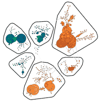
V. van Unen, N. Li, I. Molendijk, M. Temurhan, T. Höllt, A. E. van der Meulen-de Jong, H. W. Verspaget, M. L. Mearin, C. J. Mulder, J. van Bergen, B. P. F. Lelieveldt, F. Koning
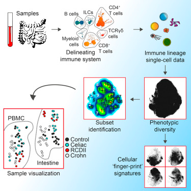
V. van Unen, N. Li, I. Molendijk, M. Temurhan, T. Höllt, A. E. van der Meulen-de Jong, H. W. Verspaget, M. L. Mearin, C. J. Mulder, J. van Bergen, B. P. F. Lelieveldt, F. Koning.
Mass Cytometry of the Human Mucosal Immune System Identifies Tissue- and Disease-Associated Immune Subsets.
Immunity,
44(5):
pp. 1227—1239,
2016.
Mass Cytometry of the Human Mucosal Immune System Identifies Tissue- and Disease-Associated Immune Subsets
V. van Unen, N. Li, I. Molendijk, M. Temurhan, T. Höllt, A. E. van der Meulen-de Jong, H. W. Verspaget, M. L. Mearin, C. J. Mulder, J. van Bergen, B. P. F. Lelieveldt, F. Koning
Immunity
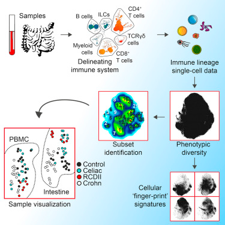
Abstract: Inflammatory intestinal diseases are characterized by abnormal immune responses and affect distinct locations of the gastrointestinal tract. Although the role of several immune subsets in driving intestinal pathology has been studied, a system-wide approach that simultaneously interrogates all major lineages on a single-cell basis is lacking. We used high-dimensional mass cytometry to generate a system-wide view of the human mucosal immune system in health and disease. We distinguished 142 immune subsets and through computational applications found distinct immune subsets in peripheral blood mononuclear cells and intestinal biopsies that distinguished patients from controls. In addition, mucosal lymphoid malignancies were readily detected as well as precursors from which these likely derived. These findings indicate that an integrated high-dimensional analysis of the entire immune system can identify immune subsets associated with the pathogenesis of complex intestinal disorders. This might have implications for diagnostic procedures, immune-monitoring, and treatment of intestinal diseases and mucosal malignancies.
LUMC Best Article Prize 2016 (non clinical)
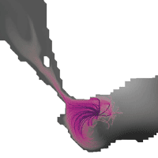
T. Höllt, M. Hadwiger, O. Knio, and I. Hoteit
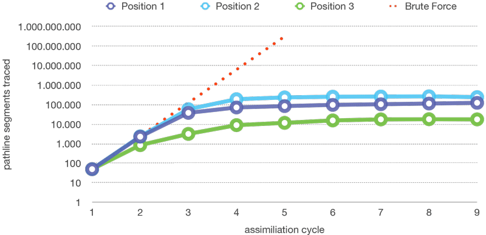
T. Höllt, M. Hadwiger, O. Knio, and I. Hoteit.
Probability Maps for the Visualization of Assimilation Ensemble Flow Data.
In Proceedings of Workshop on Visualisation in Environmental Sciences (EnvirVis),
pp. 43—47,
2015.
Probability Maps for the Visualization of Assimilation Ensemble Flow Data
T. Höllt, M. Hadwiger, O. Knio, and I. Hoteit
Proceedings of Workshop on Visualisation in Environmental Sciences (EnvirVis)
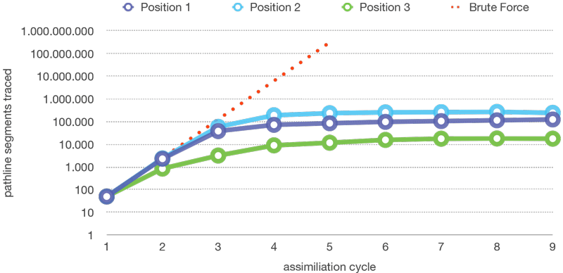
Abstract: Ocean forecasts nowadays are created by running ensemble simulations in combination with data assimilation techniques. Most of these techniques resample the ensemble members after each assimilation cycle. This means that in a time series, after resampling, every member can follow up on any of the members before resampling. Tracking behavior over time, such as all possible paths of a particle in an ensemble vector field, becomes very difficult, as the number of combinations rises exponentially with the number of assimilation cycles. In general a single possible path is not of interest but only the probabilities that any point in space might be reached by a particle at some point in time. In this work we present an approach using probability-weighted piecewise particle trajectories to allow such a mapping interactively, instead of tracing quadrillions of individual particles. We achieve interactive rates by binning the domain and splitting up the tracing process into the individual assimilation cycles, so that particles that fall into the same bin after a cycle can be treated as a single particle with a larger probability as input for the next time step. As a result we loose the possibility to track individual particles, but can create probability maps for any desired seed at interactive rates.
T. Höllt, M.U. Altaf, K.T. Mandli, M. Hadwiger, C.N. Dawson, and I. Hoteit.
Visualizing Uncertainties in a Storm Surge Ensemble Data Assimilation and Forecasting System.
Natural Hazards,
77(1):
pp. 317—336,
2015.
Visualizing Uncertainties in a Storm Surge Ensemble Data Assimilation and Forecasting System
T. Höllt, M.U. Altaf, K.T. Mandli, M. Hadwiger, C.N. Dawson, and I. Hoteit
Natural Hazards
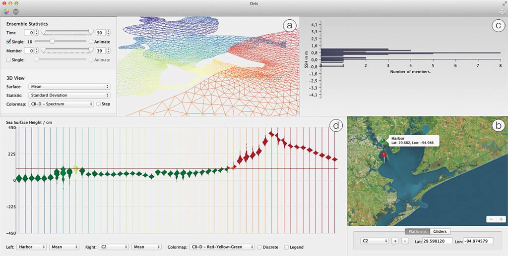
Abstract: We present a novel integrated visualization system that enables the interactive visual analysis of ensemble simulations and estimates of the sea surface height and other model variables that are used for storm surge prediction. Coastal inundation, caused by hurricanes and tropical storms, pose large risks for todays societies. High-fidelity numerical models of water levels driven by hurricane-force winds are required to predict these events, posing a challenging computational problem and even though computational models continue to improve, uncertainties in storm surge forecasts are inevitable. Today this uncertainty is often exposed to the user by running the simulation many times with different parameters or inputs following a Monte-Carlo framework in which uncertainties are represented as stochastic quantities. This results in multidimensional, multivariate and multivalued data, so-called ensemble data. While the resulting datasets are very comprehensive, they are also huge in size and thus hard to visualize and interpret. In this paper we tackle this problem by means of an interactive and integrated visual analysis system. By harnessing the power of modern graphics processing units (GPUs) for visualization as well as computation, our system allows the user to browse through the simulation ensembles in real-time, view specific parameter settings or simulation models and move between different spatial or temporal regions without delay. In addition our system provides advanced visualizations to highlight the uncertainty, or show the complete distribution of the simulations at user-defined positions over the complete time series of the prediction. We highlight the benefits of our system by presenting its application in a real world scenario using a simulation of Hurricane Ike.
T. Höllt, A. Magdy, P. Zhan, G. Chen, G. Gopalakrishnan, I. Hoteit, C.D. Hansen, and M. Hadwiger.
Ovis: A Framework for Visual Analysis of Ocean Forecast Ensembles.
IEEE Transactions on Visualization and Computer Graphics,
20(8):
pp. 1114—1126,
2014.
Ovis: A Framework for Visual Analysis of Ocean Forecast Ensembles
T. Höllt, A. Magdy, P. Zhan, G. Chen, G. Gopalakrishnan, I. Hoteit, C.D. Hansen, and M. Hadwiger
IEEE Transactions on Visualization and Computer Graphics
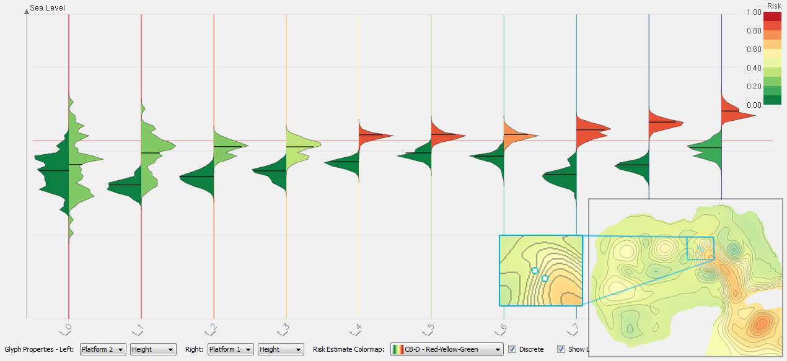
Abstract: We present a novel integrated visualization system that enables interactive visual analysis of ensemble simulations of the sea surface height that is used in ocean forecasting. The position of eddies can be derived directly from the sea surface height and our visualization approach enables their interactive exploration and analysis. The behavior of eddies is important in different application settings of which we present two in this paper. First, we show an application for interactive planning of placement as well as operation of off-shore structures using real-world ensemble simulation data of the Gulf of Mexico. Off-shore structures, such as those used for oil exploration, are vulnerable to hazards caused by eddies, and the oil and gas industry relies on ocean forecasts for efficient operations. We enable analysis of the spatial domain, as well as the temporal evolution, for planning the placement and operation of structures. Eddies are also important for marine life. They transport water over large distances and with it also heat and other physical properties as well as biological organisms. In the second application we present the usefulness of our tool, which could be used for planning the paths of autonomous underwater vehicles, so called gliders, for marine scientists to study simulation data of the largely unexplored Red Sea.
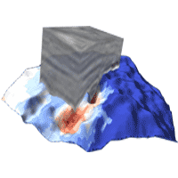
T. Höllt, G. Chen, C.D. Hansen, and M. Hadwiger
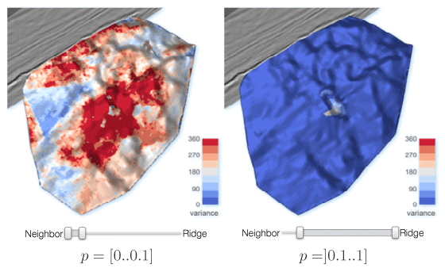
T. Höllt, G. Chen, C.D. Hansen, and M. Hadwiger.
Extraction and Visual Analysis of Seismic Horizon Ensembles.
In Eurographics (short papers),
pp. 69—72,
2013.
Extraction and Visual Analysis of Seismic Horizon Ensembles
T. Höllt, G. Chen, C.D. Hansen, and M. Hadwiger
Eurographics (short papers)
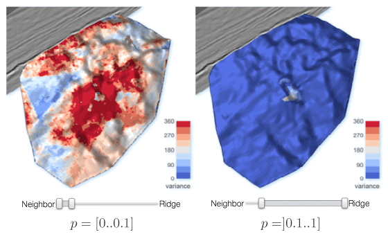
Abstract: Seismic interpretation is an important step in building subsurface models, which are needed to efficiently exploit fossil fuel reservoirs. However, seismic features are seldom unambiguous, resulting in a high degree of uncertainty in the extracted model. In this paper we present a novel system for the extraction, analysis and visualization of ensemble data of seismic horizons. By parameterizing the cost function of a global optimization technique for seismic horizon extraction, we can create ensembles of surfaces describing each horizon, instead of just a single surface. Our system also provides the tools for a complete statistical analysis of these data. Additionally, we allow an interactive exploration of the parameter space to help finding optimal parameter setting for the current dataset.
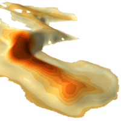
T. Höllt, A. Magdy, G. Chen, G. Gopalakrishnan, I. Hoteit, C.D. Hansen, and M. Hadwiger
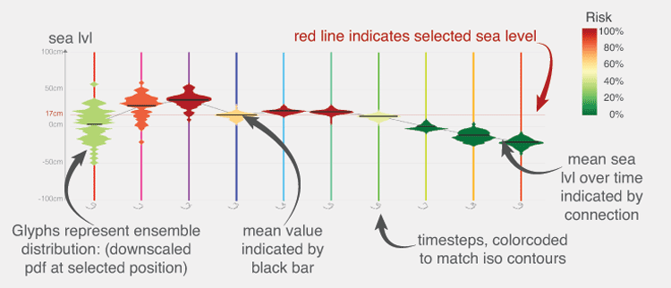
T. Höllt, A. Magdy, G. Chen, G. Gopalakrishnan, I. Hoteit, C.D. Hansen, and M. Hadwiger.
Visual Analysis of Uncertainties in Ocean Forecasts for Planning and Operation of Off-Shore Structures.
In Proceedings of IEEE Pacific Visualization Symposium,
pp. 185—192,
2013.
Visual Analysis of Uncertainties in Ocean Forecasts for Planning and Operation of Off-Shore Structures
T. Höllt, A. Magdy, G. Chen, G. Gopalakrishnan, I. Hoteit, C.D. Hansen, and M. Hadwiger
Proceedings of IEEE Pacific Visualization Symposium
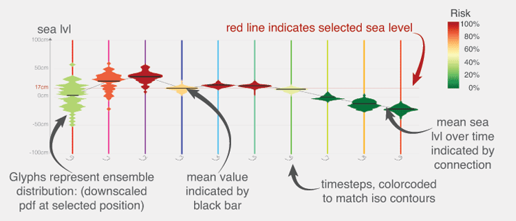
Abstract: We present a novel integrated visualization system that enables interactive visual analysis of ensemble simulations used in ocean forecasting, i.e, simulations of sea surface elevation. Our system enables the interactive planning of both the placement and operation of off-shore structures. We illustrate this using a real-world simulation of the Gulf of Mexico. Off-shore structures, such as those used for oil exploration, are vulnerable to hazards caused by strong loop currents. The oil and gas industry therefore relies on accurate ocean forecasting systems for planning their operations. Nowadays, these forecasts are based on multiple spatio-temporal simulations resulting in multidimensional, multivariate and multivalued data, so-called ensemble data. Changes in sea surface elevation are a good indicator for the movement of loop current eddies, and our visualization approach enables their interactive exploration and analysis. We enable analysis of the spatial domain, for planning the placement of structures, as well as detailed exploration of the temporal evolution at any chosen position, for the prediction of critical ocean states that require the shutdown of rig operations.
Honorable mention for best paper award
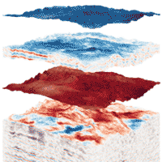
T. Höllt, W. Freiler, F.M. Gschwantner, H. Doleisch, G. Heinemann, and M. Hadwiger
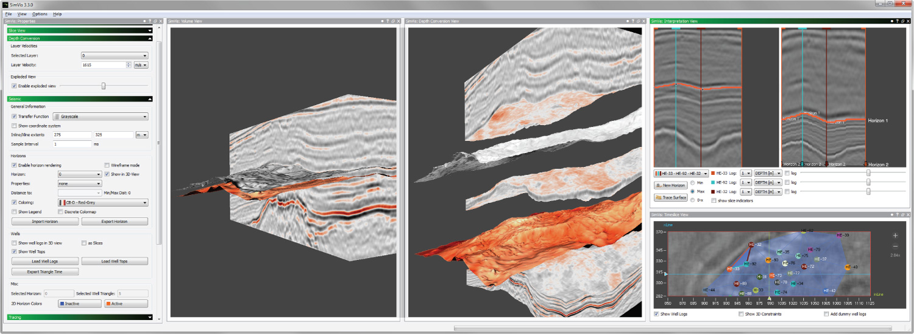
T. Höllt, W. Freiler, F.M. Gschwantner, H. Doleisch, G. Heinemann, and M. Hadwiger.
SeiVis: An Interactive Visual Subsurface Modeling Application.
IEEE Transactions on Visualization and Computer Graphics,
18(12):
pp. 2226—2235,
2012.
SeiVis: An Interactive Visual Subsurface Modeling Application
T. Höllt, W. Freiler, F.M. Gschwantner, H. Doleisch, G. Heinemann, and M. Hadwiger
IEEE Transactions on Visualization and Computer Graphics
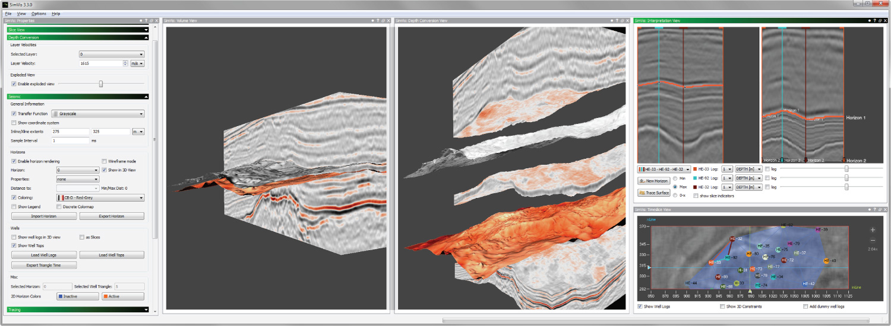
Abstract: The most important resources to fulfill today’s energy demands are fossil fuels, such as oil and natural gas. When exploiting hydrocarbon reservoirs, a detailed and credible model of the subsurface structures is crucial in order to minimize economic and ecological risks. Creating such a model is an inverse problem: reconstructing structures from measured reflection seismics. The major challenge here is twofold: First, the structures in highly ambiguous seismic data are interpreted in the time domain. Second, a velocity model has to be built from this interpretation to match the model to depth measurements from wells. If it is not possible to obtain a match at all positions, the interpretation has to be updated, going back to the first step. This results in a lengthy back and forth between the different steps, or in an unphysical velocity model in many cases. This paper presents a novel, integrated approach to interactively creating subsurface models from reflection seismics. It integrates the interpretation of the seismic data using an interactive horizon extraction technique based on piecewise global optimization with velocity modeling. Computing and visualizing the effects of changes to the interpretation and velocity model on the depth-converted model on the fly enables an integrated feedback loop that enables a completely new connection of the seismic data in time domain and well data in depth domain. Using a novel joint time/depth visualization, depicting side-by-side views of the original and the resulting depth-converted data, domain experts can directly fit their interpretation in time domain to spatial ground truth data. We have conducted a domain expert evaluation, which illustrates that the presented workflow enables the creation of exact subsurface models much more rapidly than previous approaches.
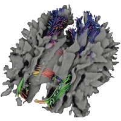
M. Schott, T. Martin, A.V. P. Grosset, C. Brownlee, T. Höllt, B.P. Brown, S.T. Smith, and C.D. Hansen
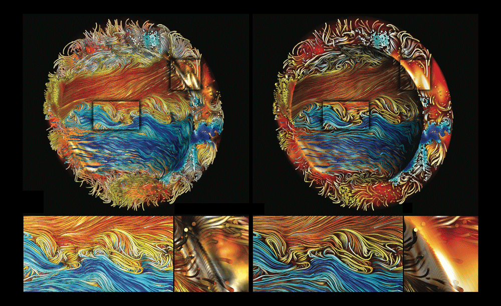
M. Schott, T. Martin, A.V. P. Grosset, C. Brownlee, T. Höllt, B.P. Brown, S.T. Smith, and C.D. Hansen.
Combined Surface and Volumetric Occlusion Shading.
In Proceedings of IEEE Pacific Visualization Symposium,
pp. 169—176,
2012.
Combined Surface and Volumetric Occlusion Shading
M. Schott, T. Martin, A.V. P. Grosset, C. Brownlee, T. Höllt, B.P. Brown, S.T. Smith, and C.D. Hansen
Proceedings of IEEE Pacific Visualization Symposium
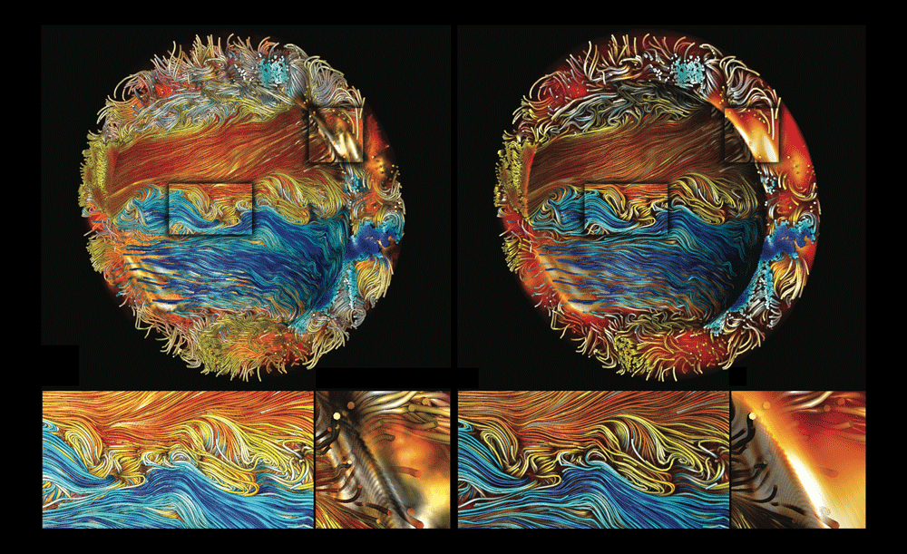
Abstract: In this paper, a method for interactive direct volume rendering is proposed that computes ambient occlusion effects for visualizations that combine both volumetric and geometric primitives, specifically tube shaped geometric objects representing streamlines, magnetic field lines or DTI fiber tracts. The proposed algorithm extends the recently proposed Directional Occlusion Shading model to allow the rendering of those geometric shapes in combination with a context providing 3D volume, considering mutual occlusion between structures represented by a volume or geometry.
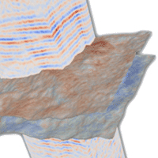
T. Höllt, J. Beyer, F. Gschwantner, P. Muigg, H. Doleisch, G. Heinemann, and M. Hadwiger
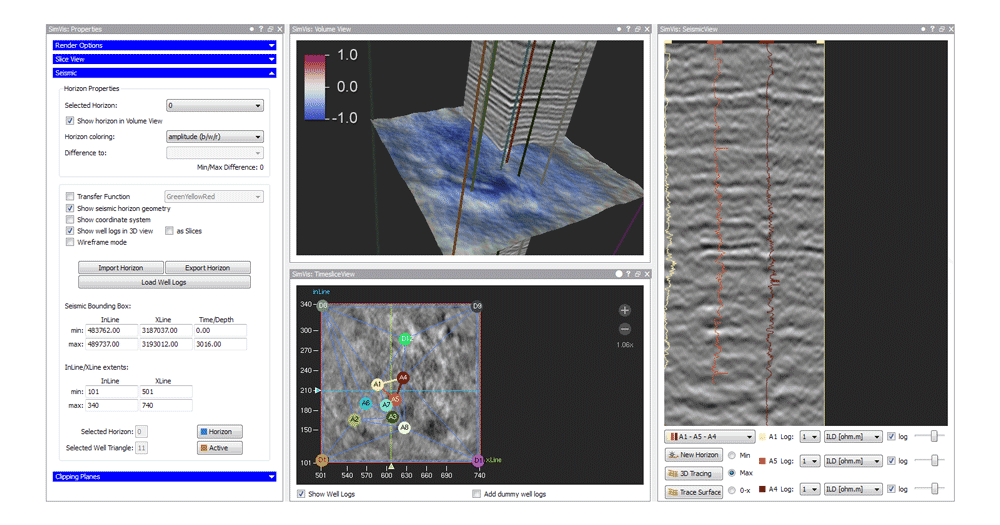
T. Höllt, J. Beyer, F. Gschwantner, P. Muigg, H. Doleisch, G. Heinemann, and M. Hadwiger.
Interactive Seismic Interpretation with Piecewise Global Energy Minimization.
In Proceedings of IEEE Pacific Visualization Symposium,
pp. 59—66,
2011.
Interactive Seismic Interpretation with Piecewise Global Energy Minimization
T. Höllt, J. Beyer, F. Gschwantner, P. Muigg, H. Doleisch, G. Heinemann, and M. Hadwiger
Proceedings of IEEE Pacific Visualization Symposium
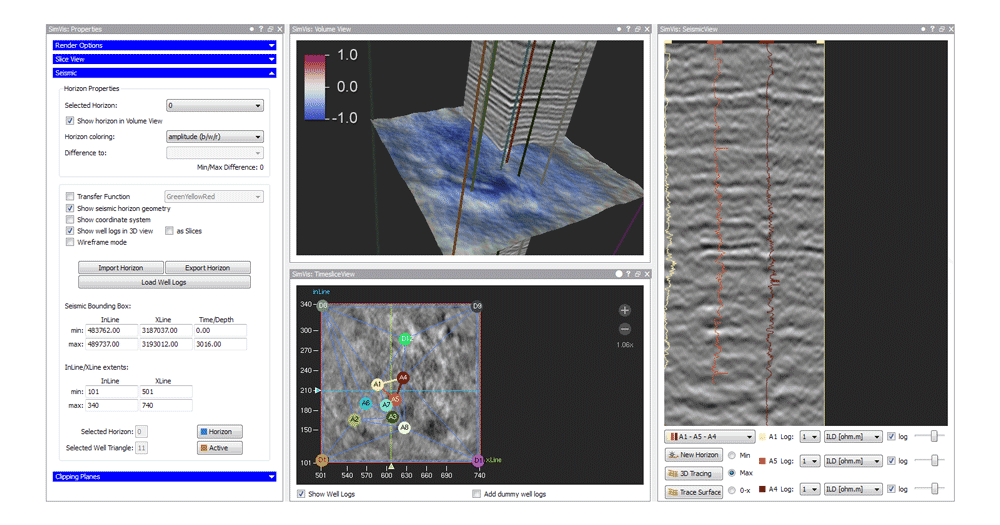
Abstract: Increasing demands in world-wide energy consumption and oil depletion of large reservoirs have resulted in the need for exploring smaller and more complex oil reservoirs. Planning of the reservoir valorization usually starts with creating a model of the subsurface structures, including seismic faults and horizons. However, seismic interpretation and horizon tracing is a difficult and error-prone task, often resulting in hours of work needing to be manually repeated. In this paper, we propose a novel, interactive workflow for horizon interpretation based on well positions, which include additional geological and geophysical data captured by actual drillings. Instead of interpreting the volume slice-by-slice in 2D, we propose 3D seismic interpretation based on well positions. We introduce a combination of 2D and 3D minimal cost path and minimal cost surface tracing for extracting horizons with very little user input. By processing the volume based on well positions rather than slice-based, we are able to create a piecewise optimal horizon surface at interactive rates. We have integrated our system into a visual analysis platform which supports multiple linked views for fast verification, exploration and analysis of the extracted horizons. The system is currently being evaluated by our collaborating domain experts.
G. Geier, T. Pabel, D. Habe, J. Rosc, M. Hadwiger, T Höllt, and L.Fritz.
Computertomographie als zerstörungsfreies Prüfverfahren für Gussteile.
Druckguss-Praxis,
7(8):
pp. 171—174,
2010.

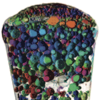
M. Hadwiger, L. Fritz, C. Rezk-Salama, T. Höllt, G. Geier, and T. Pabel
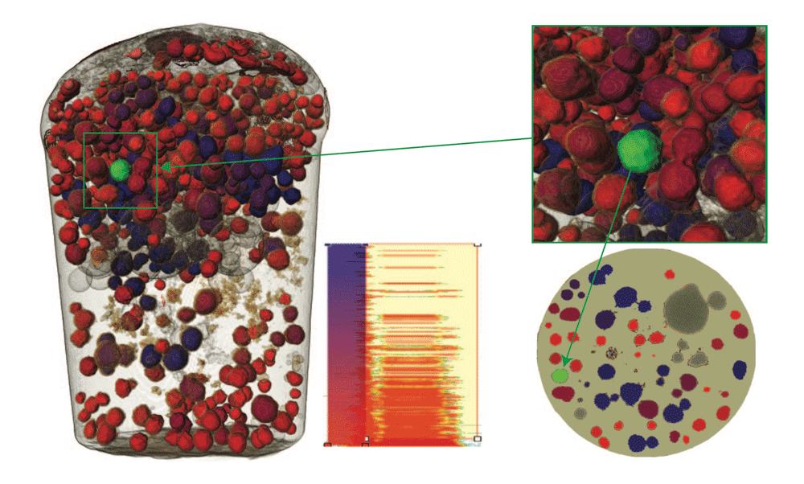
M. Hadwiger, L. Fritz, C. Rezk-Salama, T. Höllt, G. Geier, and T. Pabel.
Interactive Volume Exploration for Feature Detection and Quantification in Industrial CT Data.
IEEE Transactions on Visualization and Computer Graphics,
14(6):
pp. 1507—1514,
2008.
Interactive Volume Exploration for Feature Detection and Quantification in Industrial CT Data
M. Hadwiger, L. Fritz, C. Rezk-Salama, T. Höllt, G. Geier, and T. Pabel
IEEE Transactions on Visualization and Computer Graphics
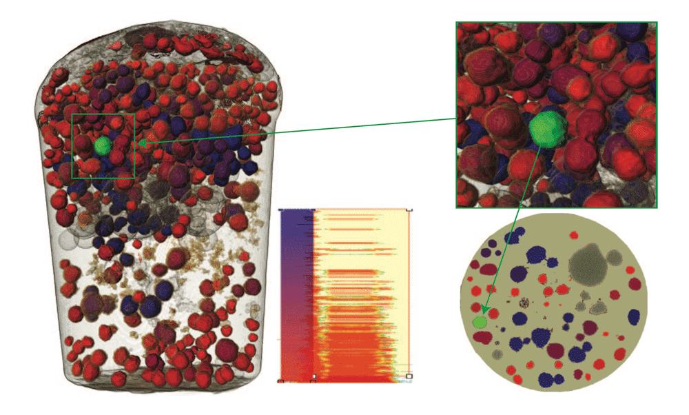
Abstract: This paper presents a novel method for interactive exploration of industrial CT volumes such as cast metal parts, with the goal of interactively detecting, classifying, and quantifying features using a visualization-driven approach. The standard approach for defect detection builds on region growing, which requires manually tuning parameters such as target ranges for density and size, variance, as well as the specification of seed points. If the results are not satisfactory, region growing must be performed again with different parameters. In contrast, our method allows interactive exploration of the parameter space, completely separated from region growing in an unattended pre-processing stage. The pre-computed feature volume tracks a feature size curve for each voxel over time, which is identified with the main region growing parameter such as variance. A novel 3D transfer function domain over (density, feature size, time) allows for interactive exploration of feature classes. Features and feature size curves can also be explored individually, which helps with transfer function specification and allows coloring individual features and disabling features resulting from CT artifacts. Based on the classification obtained through exploration, the classified features can be quantified immediately.
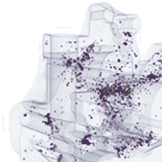
G. Geier, M. Hadwiger, T. Höllt, L. Fritz, and T. Pabel.
Interaktive Exploration und Quantifizierung von Ungänzen in komplexen Bauteilen.
In Proceedings of Industrielle Computertomografie (CT Tagung Wels),
pp. 103—108,
2008.

{kind=link}
{kind=link}
{kind=link}
{kind=link}
{kind=link}
{kind=link}
{kind=link}
{kind=link}
{kind=link}
{kind=link}
{kind=link}
{kind=link}
{kind=link}
{kind=link}
{kind=link}
{kind=link}
Posters & Sketches
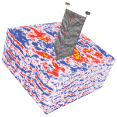
T. Höllt, M. Hadwiger, L. Fritz, P. Muigg, and H. Doleisch

T. Höllt, M. Hadwiger, L. Fritz, P. Muigg, and H. Doleisch.
Seismic Horizon Tracing with Diffusion Tensors.
Poster Presentation, Visweek, Atlantic City, NJ,
2009.
Seismic Horizon Tracing with Diffusion Tensors
T. Höllt, M. Hadwiger, L. Fritz, P. Muigg, and H. Doleisch
Poster Presentation, Visweek, Atlantic City, NJ
Abstract: This work presents a new workflow for the interpretation of seismic volume data, as well as a novel approach to interactively tracing seismic horizons. Instead of interpreting the seismic cube slice by slice, in the proposed workflow interpretation is performed on the planes connecting wells that have been drilled. Thereby the additional data provided by the well logs can easily be used during the interpretation process. Instead of manually picking the seismic horizon, we propose an algorithm which uses numerical integration over a vector field computed with diffusion tensors for automatic tracing, based on a user-defined seed point.
Theses
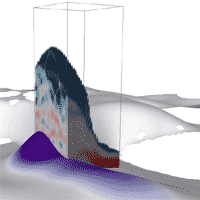
T. Höllt
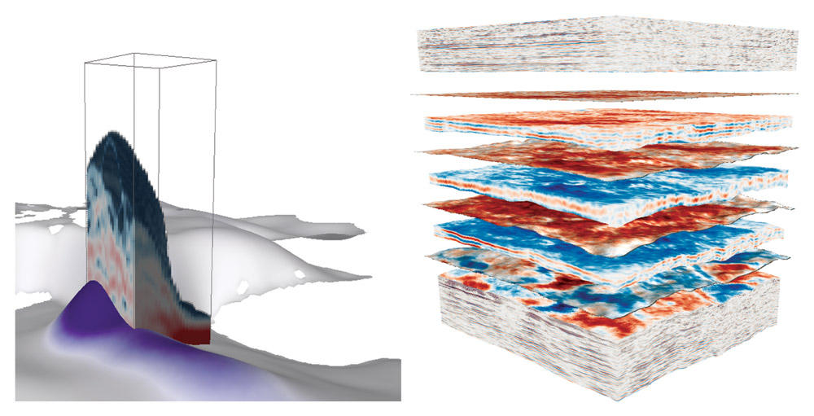
T. Höllt.
Visual Workflows for Oil and Gas Exploration.
Ph.D. Thesis,
2013.
Visual Workflows for Oil and Gas Exploration
T. Höllt
Ph.D. Thesis
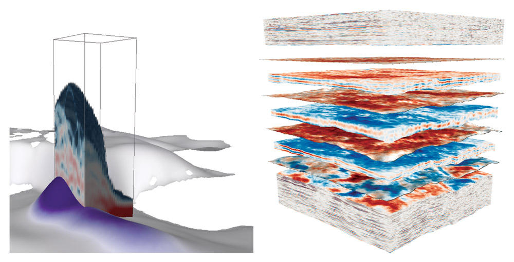
{kind=link}
Abstract: The most important resources to fulfill today’s energy demands are fossil fuels, such as oil and natural gas. When exploiting hydrocarbon reservoirs, a detailed and credible model of the subsurface structures to plan the path of the borehole, is crucial in order to minimize economic and ecological risks. Before that, the placement, as well as the operations of oil rigs need to be planned carefully, as off-shore oil exploration is vulnerable to hazards caused by strong currents. The oil and gas industry therefore relies on accurate ocean forecasting systems for planning their operations. This thesis presents visual workflows for creating subsurface models as well as planning the placement and operations of off-shore structures. Creating a credible subsurface model poses two major challenges: First, the structures in highly ambiguous seismic data are interpreted in the time domain. Second, a velocity model has to be built from this interpretation to match the model to depth measurements from wells. If it is not possible to obtain a match at all positions, the interpretation has to be updated, going back to the first step. This results in a lengthy back and forth between the different steps, or in an unphysical velocity model in many cases. We present a novel, integrated approach to interactively creating subsurface models from reflection seismics, by integrating the interpretation of the seismic data using an interactive horizon extraction technique based on piecewise global optimization with velocity modeling. Computing and visualizing the effects of changes to the interpretation and velocity model on the depth-converted model, on the fly enables an integrated feedback loop that enables a completely new connection of the seismic data in time domain, and well data in depth domain. For planning the operations of off-shore structures we present a novel integrated visualization system that enables interactive visual analysis of ensemble simulations used in ocean forecasting, i.e, simulations of sea surface elevation. Changes in sea surface elevation are a good indicator for the movement of loop current eddies. Our visualization approach enables their interactive exploration and analysis. We enable analysis of the spatial domain, for planning the placement of structures, as well as detailed exploration of the temporal evolution at any chosen position, for the prediction of critical ocean states that require the shutdown of rig operations. We illustrate this using a real-world simulation of the Gulf of Mexico.
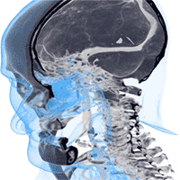
T. Höllt
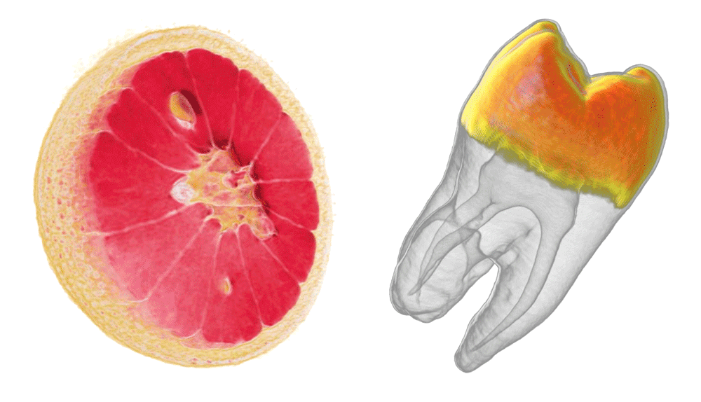
T. Höllt.
Direct Processing of Compressed Volume Data.
Masters Thesis,
2008.
Direct Processing of Compressed Volume Data
T. Höllt
Masters Thesis
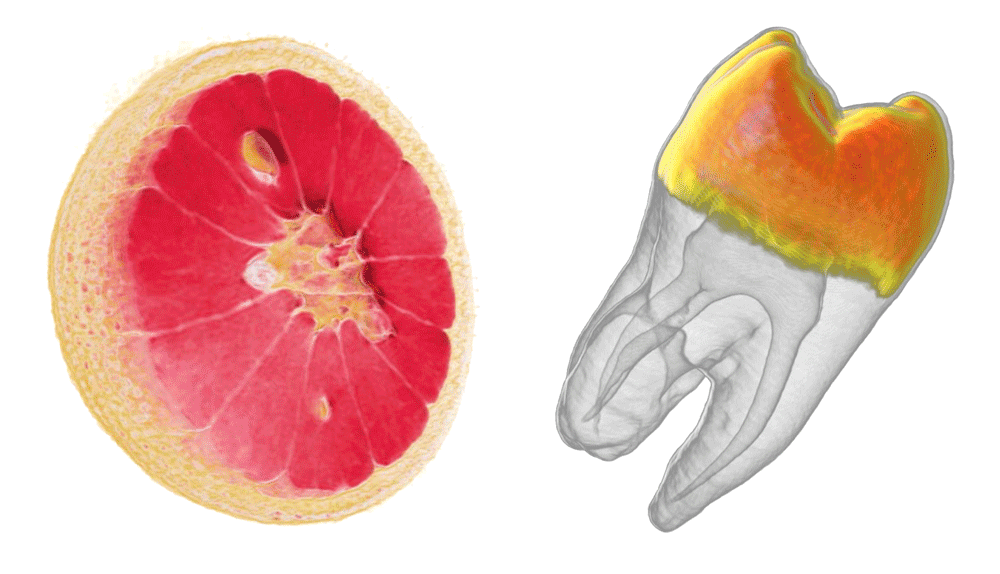
{kind=link}
Abstract: Using programmable graphics hardware (GPU) is the de-facto standard for real time volume rendering nowadays. In addition to that, GPUs are often used for non-graphical tasks to accelerate complex computations and also allow the direct rendering of (intermediate) results. However, the amount of graphics memory can become a problem when working with large volume datasets. Even though todays graphics hardware provides more memory than ever before, the amount of data is also increasing rapidly. In order to overcome this, lots of compression algorithms have been developed and some of them even are hardware-accelerated. As these implementations only support a small range of formats and often do not provide sufficient quality, custom algorithms have been implemented which often utilize shader programs for decoding and encoding. While this has proven useful for visualization, providing interactive framerates for direct volume rendering, the algorithms focus on displaying the data, not processing it. In this thesis different compression techniques are compared with focus on their suitability for processing in the compression domain. A wavelet transform based compression scheme is implemented which allows lossless as well as lossy compression of volume data. Image processing operations are classified based on their applicability in the wavelet compression domain. Based on this classification different image operations are exemplarily implemented. Furthermore for visualization multi-planar reconstruction directly from the compressed data is presented. The results of this thesis are compared to processing in the spatial domain, showing advantages and shortcomings. Concluding an outlook on possible future work is given.